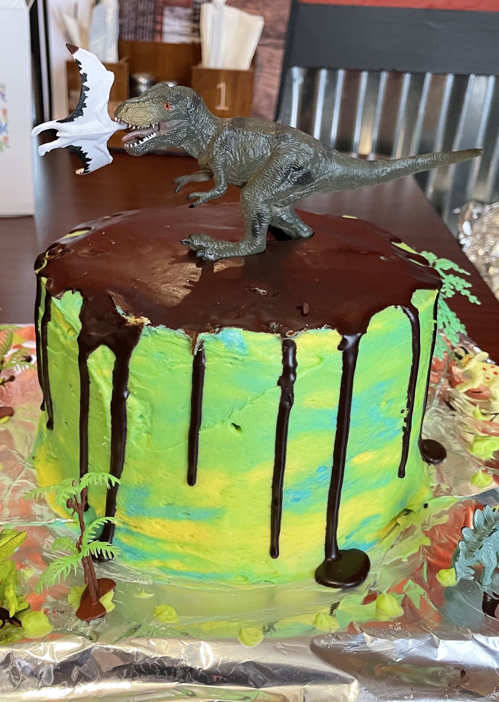
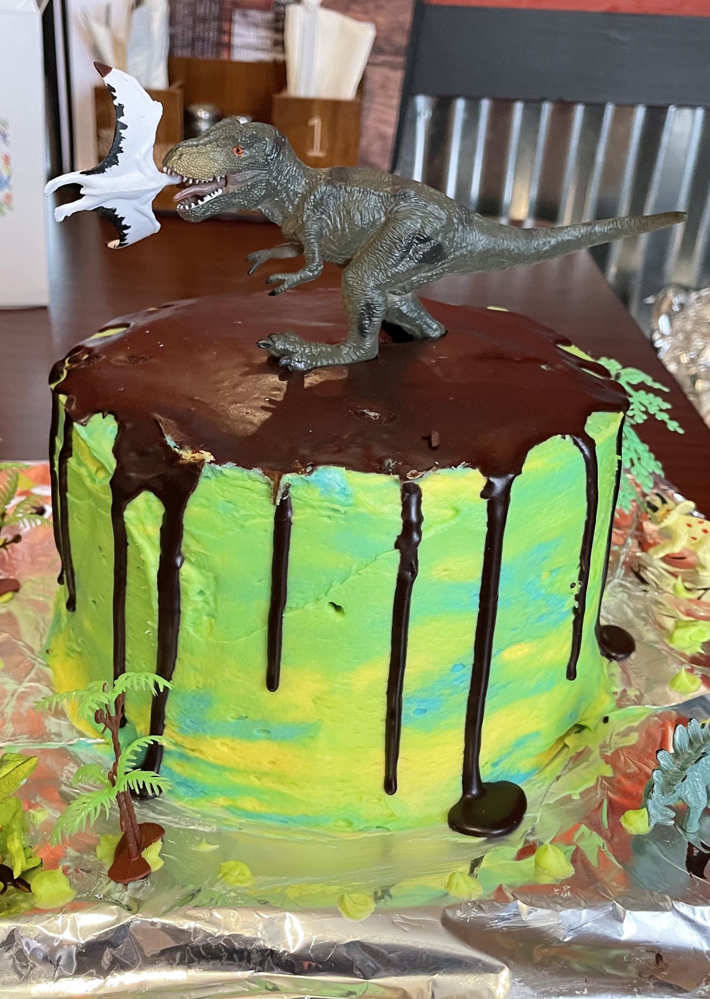

BANANA CAKE
A delicious banana cake with buttercream frosting is a moist, fluffy cake. After baking until golden, the cake is topped with a smooth, creamy buttercream frosting, which adds a light sweetness and buttery richness that complements the banana flavor perfectly. This combination creates a delightful, crowd-pleasing dessert that's perfect for any occasion.
Banana Cake
Ingredients:
- 2 cups flour
- 1 teaspoon baking powder
- 1 teaspoon baking soda
- ½ teaspoon salt
- 1 ⅓ cup sugar
- ½ cup soft butter
- ½ cup buttermilk
- 1 cup mashed bananas
- 2 eggs
- 1 teaspoon vanilla
Directions:
Sift dry ingredients; add butter, buttermilk, and bananas. Beat well. Add eggs and vanilla, pour into a greased and floured pan. Bake at 350 degrees for 25 minutes.
Buttercream frosting
Ingredients:
- ½ cup unsalted butter, at room temp
- 2 cups powdered sugar
- 1 ½ teaspoons pure vanilla extract
- 2 tablespoons milk
- Food coloring (optional)
Directions:
Cream butter in the bowl, with a hand/stand mixer until smooth and fluffy. Gradually beat in the powdered sugar and butter until fully incorporated. Beat in vanilla extract. Add milk and beat for another couple minutes.
Decorate Cake! And Enjoy!

Triple Chocolate Cake
A triple chocolate cake with chocolate ganache is an indulgent, rich dessert made with three types of chocolate: cocoa powder, melted chocolate, and chocolate chips. The cake is dense, moist, and deeply chocolaty, with layers of flavor. It's frosted with a silky, glossy chocolate ganache that adds an extra layer of decadence. Perfect for chocolate lovers, this cake is a luxurious treat that's both visually stunning and incredibly satisfying.
Triple Chocolate Cake
Total time: 1hr 20 min
Cake Ingredients
- 2 cups sugar
- 1 cup butter softened
- 1 ½ teaspoons pure vanilla extract
- 3 large eggs
- 2 ½ cups cake flour
- 1 cup baking cocoa
- 2 teaspoons baking soda
- ½ teaspoon salt
- ½ cup instant chocolate pudding mix (small box)
- 2 ¼ cups buttermilk
- 1 cup semi-sweet chocolate chips
CHOCOLATE ICING:
- ½ cup water
- ½ cup butter
- 1 teaspoon vanilla
- 1 cup baking cocoa
- 3 ½ cups powdered sugar
- 3 tablespoons heavy cream (more or less for consistency)
Instructions:
In a large mixing bowl, whisk together flour, sugar, cocoa powder, instant chocolate pudding mix, baking soda and salt. Once mixed mix in your butter, eggs and vanilla. And then gradually add butter milk. Once all is combined add chocolate chips.
Pour into a greased up bundt pan. Bake at 350 degrees for 35-45 min.
Ganache Ingredients
- ⅔ cup heavy whipping cream
- 1 cup semi sweet chocolate chips
Make the ganache by heating heavy cream in a saucepan over medium heat until steaming. Whisk in chocolate chips just until chocolate chips are melted. Allow to set for 2 minutes. Continue until the mixture is shiny and smooth. Poorly cooled cake till it overflows. Let sit and cool for a while. Eat!
Tip: Double ganache recipe to fill and pour over cake.

Peppermint Cake
A vanilla cake with peppermint buttercream frosting is a light fluffy cake. Topped with a smooth, refreshing peppermint buttercream frosting, the cake is a perfect balance of sweet and minty flavors. The peppermint adds a cool, festive twist to the classic vanilla cake, making it a perfect treat for holidays or any occasion that calls for a refreshing, seasonal dessert.
Peppermint Vanilla Cake
Vanilla Cake Ingredients:
- 2 cups all purpose flour
- 2 ½ teaspoons baking powder
- ¼ teaspoon salt
- 4 eggs
- 1 ½ cups sugar
- ½ cup unsalted butter
- 1 cup milk
- 3 teaspoons vanilla extract
- 3 teaspoons oil
Directions:
In a large mixing bowl, whisk flour, baking powder and salt. In another bowl beat together your eggs and sugar, after your eggs and sugar have been whipped add in your melted butter. Then gently add in your flour, once mixed, add in your vanilla and oil and your warm milk. Once mixture is all mixed in. Pour into your greased 8 inch pan. Bake at 350 degrees for 20 min. Let sit.
Buttercream frosting Ingredients:
- ½ cup unsalted butter, at room temp
- 2 cups powdered sugar
- 1 ½ teaspoons pure vanilla extract
- 2 tablespoons milk
- Food coloring (optional)
Directions:
Cream butter in the bowl, with a hand/stand mixer until smooth and fluffy. Gradually beat in the powdered sugar and butter until fully incorporated. Beat in vanilla extract. Add milk and beat for another couple minutes.
Ganache Ingredients:
- ⅔ cup heavy whipping cream
- 1 cup semi sweet chocolate chips
Tip: Double ganache recipe to fill and pour over cake.
Make the ganache by heating heavy cream in a saucepan over medium heat until steaming. Whisk in chocolate chips just until chocolate chips are melted. Allow to set for 2 minutes. Continue until the mixture is shiny and smooth.
Decoration:
Single Layer Cake:
AFter your cake has cooled. Frost the cake then pour over the ganache. Before adding more decoration in frosting to the top and then add as much peppermint to the top. And Enjoy!
Layered Cake:
Once the cake is cool you can add your frosting and in between layers of the cake add peppermint bits. Then another layer of cake. Then you can frost your cake and pour over your ganache and decorate! You can add as much peppermint to the top! Then Enjoy!
Reeses Peanut Buttter Cake
A chocolate cake with Reeses peanut butter frosting is a decadent treat combining rich, moist chocolate cake with a creamy, indulgent peanut butter frosting. The frosting is made with Reeses peanut butter, giving it a smooth, nutty flavor that perfectly complements the deep chocolate. Topped with chopped Reeses Peanut Butter Cups, this cake is a heavenly blend of chocolate and peanut butter, offering a satisfying, sweet-and-salty treat that's sure to please any dessert lover.
Reese's Peanut Butter Cake
Chocolate Cake Ingredients:
- 2 cups sugar
- 1 cup oil
- 3 cups flour
- 2 teaspoons baking soda
- 1 teaspoon salt
- ½ cup baking cocoa
- 1 cup boiling water
- 2 eggs
- 1 cup buttermilk
Directions:
In a large mixing bowl, mix in all dry ingredients. After it is well mixed add in your eggs, oil, and butter, and water. Once all is mixed in good. Put in a well greased pan. And bake at 350 degrees for 30 min. After baking, let cool before frosting and decorating.
Peanut butter frosting:
Buttercream frosting Ingredients:
- ½ cup unsalted butter, at room temp
- 2 cups powdered sugar
- 1 ½ teaspoons pure vanilla extract
- As much peanut butter as you want.
- Whipping cream (to make it to the right consistency about 2 tablespoons)
Directions:
Cream butter in the bowl, with a hand/stand mixer until smooth and fluffy. Gradually beat in the powdered sugar and butter and peanut butter, until fully incorporated. Beat in vanilla extract. Add milk and beat for another couple minutes. Frost cake.
Ganache Ingredients:
- ⅔ cup heavy whipping cream
- 1 cup semi sweet chocolate chips
Tip: Double ganache recipe to fill and pour over cake.
Make the ganache by heating heavy cream in a saucepan over medium heat until steaming. Whisk in chocolate chips just until chocolate chips are melted. Allow to set for 2 minutes. Continue until the mixture is shiny and smooth.
Decoration:
Single Layer Cake:
Frost cake and pour over ganache to your desire. Then add as many Reese's Peanut Butter Cups as you want to the top! Then Enjoy!
Layered cake:
Once the cake is cooled you can decorate it by adding the peanut butter frosting, and some ganache topped with Reese's peanut butter cups smashed between the layers of the cake. Then on the top you can decorate it by adding the frosting and pouring your ganache over top then add as many Reese's Peanut Butter Cups as your heart desires to the top. Then Enjoy!